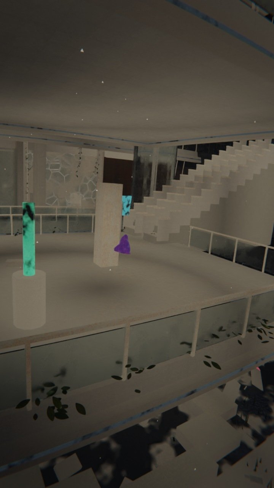
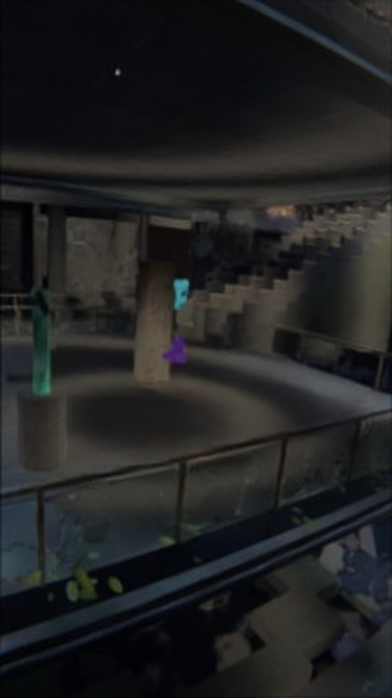
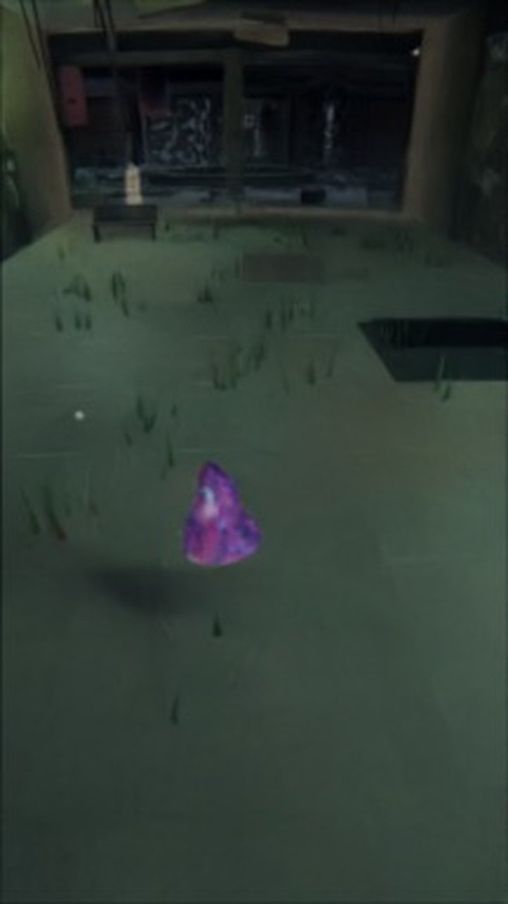
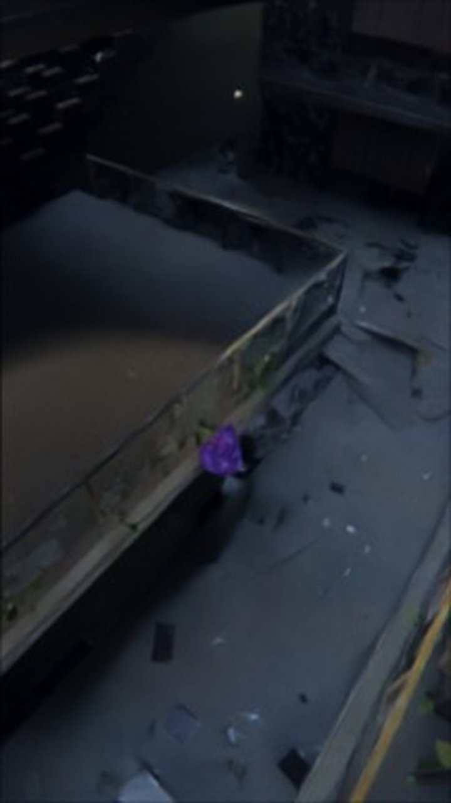
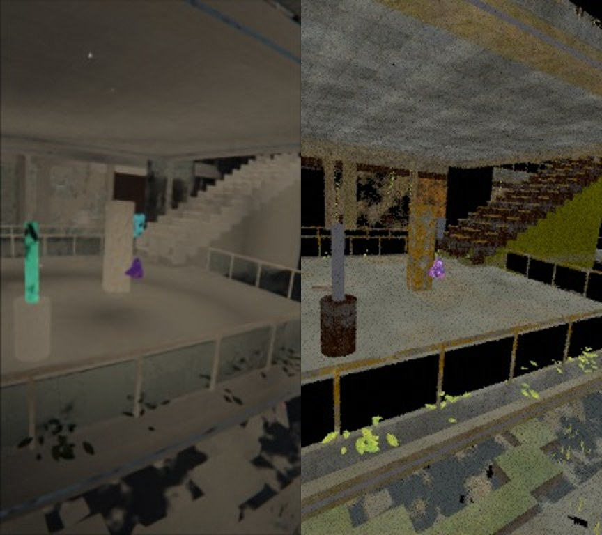
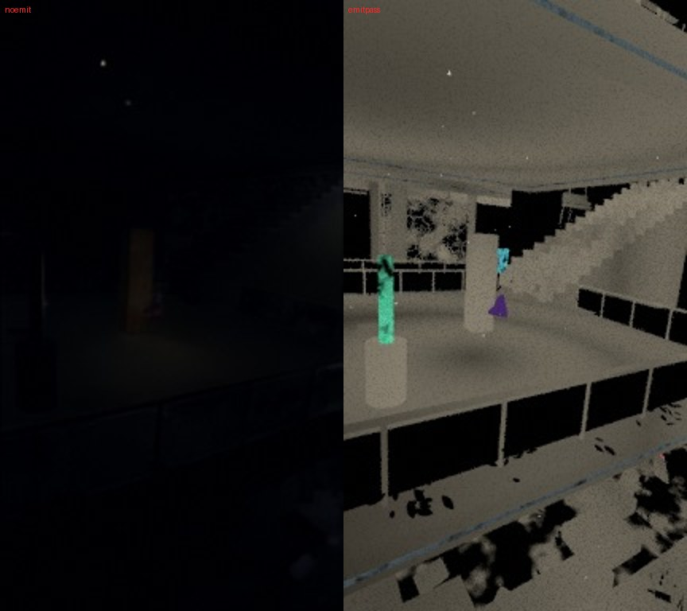

← 進捗表に戻る
共有資料の一覧
／ 確認ページ #206317 宇宙うんこ v5.1h 廃墟モール×沈める寺：写真が『写真』として出るようになった（本番描画は走行中）
#206317 宇宙うんこ v5.1h 廃墟モール×沈める寺：写真が『写真』として出るようになった（本番描画は走行中）
2026-11-06 実装・main合流・本番(GitHub Pages)反映まで実測確認
4日間で10回やった切り分けは全部ハズレで、真因は
①全部の面が薄いベージュに自己発光していた
（波紋の輪の発光が常に全域に乗っていた）と
②Cyclesでは光が建物の中に入っていなかった
（空の全域霧・屈折ガラス・空の暗さ）の2つ。直して手元で描いたら、床のタイル・苔の階段・錆・つる・がれきが初めて見えた。本番（全2694コマ・GitHub Actions・0円）は走行中で、終わり次第つづきの便が組み立てて採点する。
② 数字
0円
使ったお金（素材はCC0／NASA、描画はGitHub無料枠）
2
真因の数（発光・光の入口）
10→0
ハズレの切り分け回数→同じ穴を掘り直さないよう記録に全部書いた
2694
本番で描くコマ数（40分割・約4時間見込み）
③ 実データでのスクリーンショット
前（GitHubのCycles・フル解像度・同じコマ1000）：全部ベージュの粘土

後（手元の縮小試し・同じコマ1000）：床霧に日差し・タイル・錆の手すり

大通り（コマ300）：緑の非常灯・草・店先

4階の縁（コマ2300）：がれき・ガラス片・錆

証拠1：左＝実描画／右＝光を当てる前の色（材質は無罪）

証拠2：左＝発光を切る／右＝発光だけ（この発光が全部を塗り潰していた）

④ 押せるリンク
本番描画の走行（GitHub Actions run 42131804856）
https://github.com/tamago2022/tamago-shinchoku/actions/runs/42131804856
⑤ 何をどう確かめたか
確認項目
結果
材質（写真）が届いているか
アルベドで全部出た
発光を切ると粘土が消えるか
消えた（真っ暗になった）
Cyclesで光が中に入るか
空の霧を外し・ガラスをカメラ光線だけに・空18で入った
本番の全コマ描画
走行中（この便では未完）
組み立て・採点・納品
つづきの便
← 進捗表に戻る